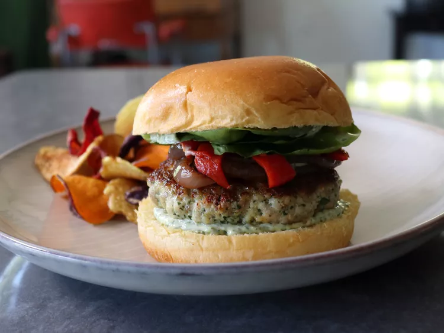

Chimichurri Chicken Burgers

Description
We fixed the chicken burger, and all it really took was stirring in a couple spoons of chimichurri sauce. No longer sort of dry and kind of boring, this is one of the best burgers you'll ever have.
Ingredients for 4 persons
Chimichurri Sauce:
- 1/2 cup Italian parsley leaves
- 1/4 cup fresh cilantro leaves
- 2 tablespoons fresh oregano leaves
- 2 cloves garlic, sliced
- 1/4 cup olive oil
- 2 tablespoons white wine vinegar
- 1/4 teaspoon kosher salt
- 1/4 teaspoon freshly ground black pepper
- 1/4 teaspoon ground cumin
- 1/8 teaspoon red pepper flakes
Chicken Burgers
- 1 1/2 pounds boneless skinless chicken thighs
- 1 1/2 teaspoons kosher salt
- 2 tablespoons breadcrumbs (optional)
- 2 tablespoons olive oil
- 1/3 cup mayonnaise
Steps
- To make chimichurri, chop herbs with a sharp knife until fine; add sliced garlic to the mixture. Continue chopping until mixture is very fine; transfer to a bowl. Stir in the 1/4 cup olive oil, white wine vinegar, the 1/4 teaspoon salt, black pepper, cumin, and red pepper flakes. Wrap and refrigerate until needed.
- To make burgers, place chicken thighs in the freezer until firm and half-frozen, about 30 minutes.
- Place thighs on a cutting board, and using a large sharp knife or heavy cleaver, chop until it resembles coarsely ground meat. (Alternatively, place chicken in a food processor; pulse on and off, scraping sides often, until texture resembles coarsely ground meat.)
- Transfer chicken to a bowl, add the 1 1/2 teaspoons salt and 1/4 cup chimichurri sauce. Use a fork to mix thoroughly.
- Using damp hands, form chicken mixture into 4 equal-sized patties, about 1/2-inch thick. Cover and refrigerate until chilled, about 30 minutes.
- Stir together mayonnaise and remaining chimichurri sauce to make spread for buns; refrigerate until needed.
- Remove burgers from the fridge; sprinkle both sides with breadcrumbs.
- Add olive oil to a large non-stick skillet and set over medium high heat. When hot, but before oil starts smoking, add burgers, and cook about 5 minutes per side, or until chicken is cooked through. An instant read thermometer inserted near the center should read 145 to 150 degrees F (63 to 65 degrees C).
- Let burgers rest for a minute or two. Serve on buns spread with chimichurri mayo and the fixings of your choice.